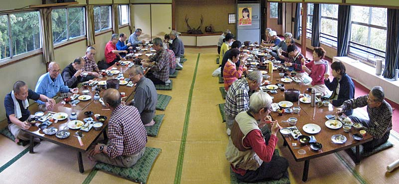
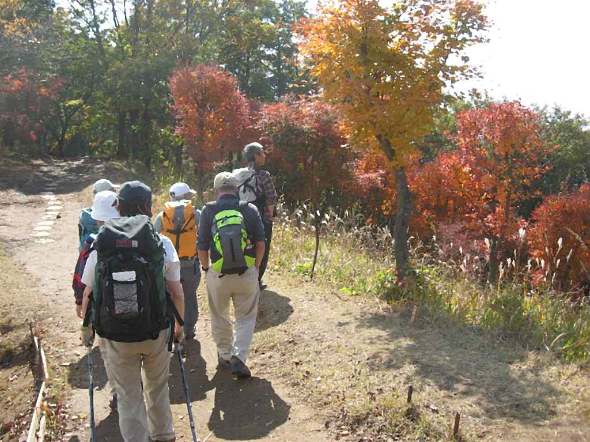
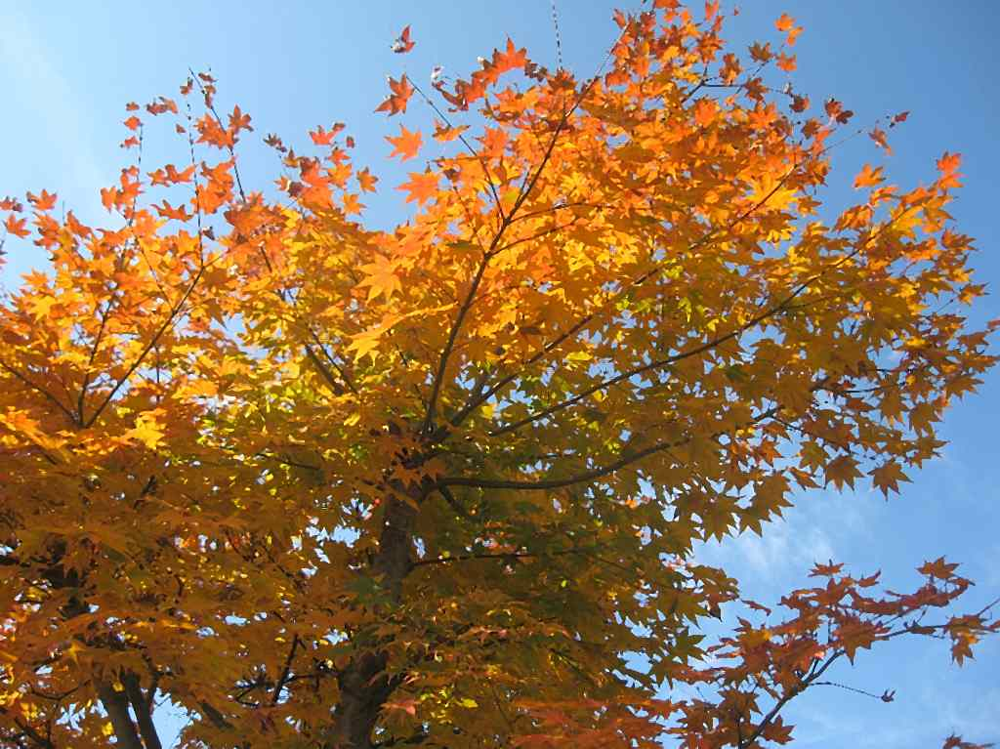
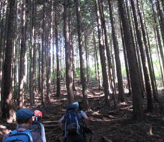

|
|||||||||||||||||||||||||||
|
|||||||||||||||||||||||||||
|
2009年秋の全国集会（高尾山） |
| 開 催 日 | ２００９年１０月３０〜11月１日 | |||
| リーダー | 益崎 健二郎 | |||
| 報 告 者 | ASCホームページ委員会 | |||
| 参加者数 | ３３名 （会員３２名、ゲスト１名） | |||
| 2009年秋の全国集会は天気にも恵まれ、雪に輝く富士山を見ながら 秋の高尾山とそれに連なる山々を楽しみました。 ＡＳＣ会員でもある日本山岳会高尾の森つくりの会の中心メンバー 河西さんの説明もいただき、活動現場も見学しました。 |
| １日目 １０月３１日（土） |
| 討論会・懇親会 報告者 西田 進 |
| 会員は個人やグループで、マイカーで直接あるいは高尾山等を経由して、会場の天下茶屋に集合した。受付け開始の１４時には大半の会員が集合し、逐次温泉に入浴し、喉を潤し、討論会・懇親会に備えた。 |
| A | ||
| 弁天島温泉の天下茶屋は、国道２０号の千木良から専用山道を標高差で ２３m（GPSによる）下ったところにある純和風割烹旅館である |
||
| A |
|
A | |||
| 益崎さんの司会で、物故会員に対する 黙祷を捧げた後、討論会は始まった |
河西さんが、「高尾の森づくり−その思想と実践」を、ビデオ付きで説明した 写真をクリックするとビデオを見れます |
中川さんが、「スキー登山の危険」について、過去の３つの事例から説明した |
| 「スキー登山の危険」の話に聴き入る会員 |
| 懇親会前の集合写真（撮影者 藪田） |
| 懇親会の料理（撮影者 藪田） |
| ２日目 １１月１日（日） |
| 前夜の天気予報が外れて、翌朝は快晴、７時に朝食を済ませ、８時から次の４つのコースに分かれて宿を出発した。 １．陣馬山コース ２．日影尾根コース ３．高尾山コース ４．高尾の森づくりコース |
|  |
| 昨夜遅くまで飲んでいたにも拘らず、早朝から食欲旺盛な健啖家の皆さん |
| 出発前の集合写真（撮影者 藪田） |
| 天下茶屋から望む富士山 |
| 1.陣馬山コース 報告者 小林義亮 |
| 盛り上がった翌朝、「伊藤さんと歩く陣場山コース」の参加者１０名は、８時１０分に宿のマイクロバスで出発し落合から陣馬山、景信山、小仏峠へと足を進めた。さすが東京近郊の山、稜線を行き交う登山客は多い。 |
| 晩秋の佇まいとなってきた陣馬山登山口で。一ノ尾尾根を陣馬山目指していざ出発。天気は良い。登山道は良く整備されている。時折見える稜線を仰ぎながらゆっくり上り、陣馬山頂へは２時間ほどの歩きで、１０時４０分に到着。 |
| 陣馬山頂。 北条氏の出城である八王子の滝山城を攻めた武田氏が陣を張った山で陣場山が本来の名。 １９５０年代に京王電鉄が山頂に白馬の像を建てて「陣馬高原」と名付けて以来陣馬山が一般になってしまった。 「はくばだけ」などと同じく、謂われのある名前が平板になってしまうのは淋しい。 |
| 残念ながら折からの暖気で霞んでいる富士山 |
|  |
|  |
| 陣馬山頂付近の紅葉 |
| 陣馬山頂を下ってこれから稜線を進む。木漏れ日は暖かい | ||
| 次のピークである景信山に近づくにつれて人が多くなり、景信山の茶店は満杯。ミシュラン効果か |
| 小仏峠。ここで出発地点の天下茶屋へ戻る２人、引き続き稜線を９キロ先の高尾山口へと足をのばす健脚の２人と別れ、残り６人は峠を下り最終目的地の小仏バス停へ。暖かい日差しに恵まれて気のおけない仲間との楽しい１日だった。 |
| 歩 い た G P S 軌 跡 |
| リーダーを務めていただいた伊藤さん、そしてご一緒いただいた皆さん、ありがとうございました |
| ２．日影尾根コース 報告者 高尾文雄 |
| 天下茶屋—東海自然歩道—小仏城山—日影尾根—日影沢—日影バス停 |
| 日影コースの入口。右に日影林道が見える |
| A | ||
| 尾根の途中で休憩しているところ | かなり古い標石 |
| 尾根コース終了の渡渉地点 |
| 最近エアリア・マップに道が載ったようです。何人かの登ってくるハイカーに会いました。 |
| ３．高尾山コース 報告者 安井康夫 |
| 天下茶屋—（バス）—高尾山口(9:15)—稲荷山コース—高尾山頂(12:20)—小仏城山—東海自然歩道—千木良（天下茶屋）(13:40) |
| 晴天に恵まれての山行で、奥村さん、福井のみなさんと一緒に楽しみました。 |
| 出発前。笑顔がとても「若い」ですね！ |
| A | ||
| 稲荷山コースを行く。 終始快調なペースの奥村さん。 | ||
| 一丁平での昼食。広い一丁平ではベンチをテーブル代わりにして昼食を楽しむ登山者や大騒ぎの小学生、トカゲしている登山者・・・みんなそれぞれ楽しんでいました。 |
| 展望を楽しむ福井の皆さん。 「福井でも自然歩道を造ってきたが、さすが首都圏の山だね。活気があっていいね」と宮本代表 |
| A | ||
| 一丁平から城山へ。快調なペースは続く。 | ||
| この日、高尾山一帯は、中高年者、小学生の団体、山岳トレイル、アベックなど老若男女の登山者で大賑わいでした。山岳トレイルではベテランのランナーに混じって、若い女性もたくさんトレーニングしているのにはびっくり。地元奥村さんの名案内で、みなさん満足して「秋の全国集会」を終えました。 |
| ４．高尾の森づくりコース 報告者 高井紀栄 |
| 天下茶屋—東海自然歩道—小仏城山—小仏峠—景信山—小下沢・高尾の森作業場 —小下沢林道—バス停 |
| A | A |  | ||
| 東海自然歩道 | ||||
| 城山。日影尾根コース参加者としばしのお別れ |
| 小仏峠 | 景信山での宴会 |
| 景信山の秋 |
| A | ||
| 景信山山頂を少し下りてから植栽地へ入る | 植えられた木 |
| A | ||
| 平成13年に植栽された林 | ||
| 河西さんのご指導の下での伐採体験 | ||||
| A | A |
|||
| 倒す側に切込みを入れる | 三角に切り取る | 反対側から伐っていく | ||
| 倒れた！ |
| A | ||
| 伐採して整備され明るくなった林 | 伐採、植栽して混合林になると日も入って美しい森になる |
 |
||
| 高尾の森作業場で日影コースのメンバーと合流。 美味しい豚汁をご馳走になりました。 河西さんお世話になりました。ありがとうございました。 |
||
| 景信山の少し下から登山道を離れて植栽地に入る 画像ををクリックすると拡大します |
| ４コースに分かれてたどった各コースのメンバー の方に報告していただいて作成したものです。 |